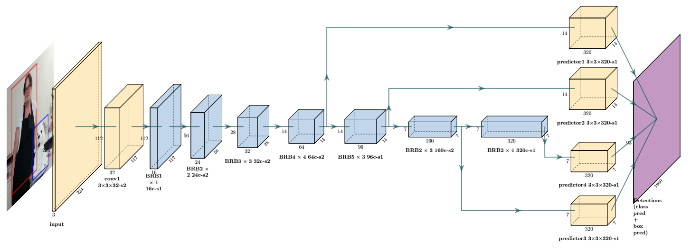
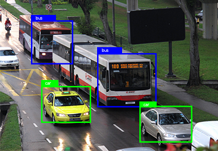
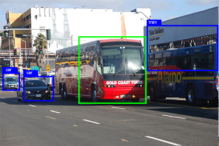
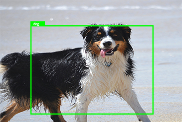
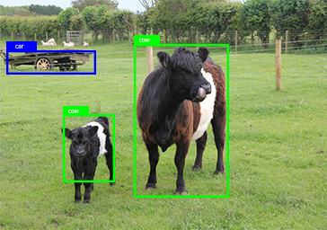
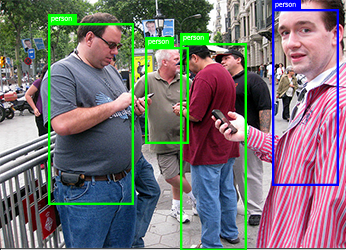
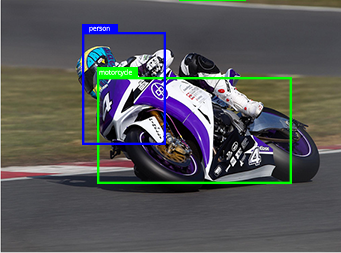

<!DOCTYPE html>
<html class="no-js" lang="en">
<head>

    <!--- basic page needs
    ================================================== -->
    <meta charset="utf-8">
    <title>MobileNet-Tiny</title>
    <meta name="description" content="">
    <meta name="author" content="">

    <!-- mobile specific metas
    ================================================== -->
    <meta name="viewport" content="width=device-width, initial-scale=1">

    <!-- CSS
    ================================================== -->
    <link rel="stylesheet" href="css/base.css">
    <link rel="stylesheet" href="css/vendor.css">
    <link rel="stylesheet" href="css/main.css">

    <!-- script
    ================================================== -->
    <script src="js/modernizr.js"></script>
    <script src="js/pace.min.js"></script>

    <!-- favicons
    ================================================== -->
    
    

</head>

<body id="top">

    <!-- header
    ================================================== -->
    <header class="s-header">

        <div class="header-logo">
            <a class="site-logo" href="index.html">
                
            </a>
        </div> <!-- end header-logo -->

        <nav class="header-nav">

            <a href="#0" class="header-nav__close" title="close"><span>Close</span></a>

            <div class="header-nav__content">
                <h3>MobileNet-Tiny</h3>

                <ul class="header-nav__list">
                    <li class="current"><a class="smoothscroll"  href="#home" title="home">Home</a></li>
                    <li><a class="smoothscroll"  href="#about" title="about">About MobileNet-Tiny</a></li>
                    <li><a class="smoothscroll"  href="#services" title="architecture">Results</a></li>
                    <li><a class="smoothscroll"  href="#works" title="works">Example Detections</a></li>
                    <li><a class="smoothscroll"  href="#contact" title="contact">Contact</a></li>
                </ul>

                <p>link to download the paper will be made available once the paper is published.</p>

            </div> <!-- end header-nav__content -->

        </nav> <!-- end header-nav -->

        <a class="header-menu-toggle" href="#0">
            <span class="header-menu-icon"></span>
        </a>

    </header> <!-- end s-header -->


    <!-- home
    ================================================== -->
    <section id="home" class="s-home target-section">

        
        <div class="video-header wrap">
            <div class="fullscreen-video-wrap">
                <video src="images/processed_sequence01.mp4" muted autoplay loop></video>
            </div>
        </div>
        <div class="home-content header-overlay">

            <div class="row home-content__main">
                <h1>
                MobileNet-Tiny <br>
                </h1>

                <p>
                Design and Implementation of a Deep Neural Network
                based Real Time Object Detection for Raspberry Pi and non-GPU Devices.
                </p>
            </div> <!-- end home-content__main -->

            
            <ul class="home-sidelinks">
                <li><a class="smoothscroll" href="#about">About<span>MobileNet-Tiny</span></a></li>
                <li><a class="smoothscroll" href="#services">Contribution<span>Results</span></a></li>
                <li><a  class="smoothscroll" href="#contact">Contact<span>Get in Touch</span></a></li>
            </ul> <!-- end home-sidelinks -->

            <ul class="home-social">
                <li class="home-social-title">Links : </li>
                <li><a href="#0">
                    <i class="fab fa-facebook"></i>
                    <span class="home-social-text">GitHub</span>
                </a></li>
                <li><a href="#0">
                    <i class="fab fa-twitter"></i>
                    <span class="home-social-text">Download Paper</span>
                </a></li>
                <li>These links will be updated soon, contact us if you have any questions.</li>
            </ul> <!-- end home-social -->

            <a href="#about" class="home-scroll smoothscroll">
                <span class="home-scroll__text">Scroll Down</span>
                <span class="home-scroll__icon"></span>
            </a> <!-- end home-scroll -->

        </div> <!-- end home-content -->


    </section> <!-- end s-home -->


    <!-- about
    ================================================== -->
    <section id='about' class="s-about">

        <div class="row section-header" >
            <div class="col-full">
                <h3 class="subhead">About</h3>
                <h1 class="display-1">MobileNet-Tiny</h1>
            </div>
        </div> <!-- end section-header -->

        <div class="row" >
            <div class="col-full">
                <p class="lead">
                    Using the SSD-Lite and MobileNetV2
                     as a starting point, MobileNet-Tiny is an attempt to get a real time object 
                     detection algorithm on non-GPU
                    computers and edge device such as Raspberry Pi. Since Raspberry Pi by itself
                    does not have enought computing capabilites, it requires more powerful base station
                     or cloud to process the image/video information captured and detect
                    objects in real-time. When MobileNet-Tiny is used, it eliminates the requirement of
                    the base station for real-time object detection.
                </p>
            </div>
        </div> <!-- end about-desc -->
        <div class="row" >
            <div class="col-full">
                
                <p class="lead">
                        MobileNet-Tiny network takes an RGB image of size 224 X 224 X 3 as an 
                        input and is passed through the convolution layers and Bottleneck Residual Blocks(BRB) 
                        to produce 7 X 7 X 320 feature map. This feature map along with other
                        feature maps form BRB4, BRB5, BRB6 are then passed through SSDLite predictor layers
                        to produce detections. These detections are filtered by a Non-Maximum Suppression layer
                        to produce final detections and bounding boxes.
                </p>
            </div>
        </div> <!-- end about-desc -->    

    </section> <!-- end s-about -->


    <section id='services' class="s-services light-gray">
        <div class="row section-header" >
                <div class="col-full">
                    <h1 class="display-1">Contribution</h1>
                </div>
    
                <div class="col-full">
                    <p class="lead">
                            MobileNet-Tiny demonstrates the power of small articial neural networks with fast
                            non-GPU object detection capabilities. <br>It suggests that since batch normalization 
                            in small neural networks increases the total number of parameters and the total number 
                            of computations required and contribute very less in achieving high accuracy,
                            not implementing batch normalization in small networks can drastically
                            increase the overall speed of the network without signicant loss of accuracy. <br>
                            It also suggests that carefully optimizing the number of predictor layers and
                            aspect ratios for anchor boxes in SSD for small networks can result in
                            signicant improvement of detection speed.
                    </p>
                </div>
            </div>
    
            <div class="row">
    
                <div class="about-process process block-1-2 block-tab-full">
    
                    <div class="process__vline-left"></div>
                    <div class="process__vline-right"></div>
    
                    <div class="col-block process__col" data-item="1">
                        <div class="process__text">
                            <h4>Results on non-GPU computer</h4>
    
                            <p>
                                MobileNet-Tiny can achieve 19.4 FPS on a Dell XPS 13. This is 3x faster than 
                                the original MobileNetV2. Our mean average precision is 52.1% on VOC 07+12 dataset 
                                and 19% on COCO dataset. You can read more about our project here and find our 
                                code here.
                            </p>
                        </div>
                    </div>
                    <div class="col-block process__col" data-item="2">
                        <div class="process__text">
                            <h4>Results on Raspberry Pi</h4>
    
                            <p>
                                MobileNet-Tiny can achieve 4.5 FPS on Raspberry Pi. This is 7x faster than 
                                the original MobileNetV2 running on this device. Our mean average precision is 52.1% on 
                                VOC 07+12 dataset and 19% on COCO dataset.
                            </p>
                        </div>
                    </div>
                </div> <!-- end process -->
    
            </div> <!-- end about-stats -->
    </section>


    <!-- works
    ================================================== -->
    <section id='works' class="s-about">

        <div class="row section-header">
            <div class="col-full">
                <h3 class="subhead">MobileNet-Tiny</h3>
                <h1 class="display-1">Example Detections</h1>
            </div>
        </div> <!-- end section-header -->

        <div class="row masonry-wrap">
            <div class="masonry">

                <div class="masonry__brick">
                    <div class="item-folio">

                        <div class="item-folio__thumb">
                            <a href="images/1.png" class="thumb-link" title="Detection" data-size="1050x700">
                                
                            </a>
                        </div>

                    </div> <!-- end item-folio -->
                </div> <!-- end masonry__brick -->

                <div class="masonry__brick">
                    <div class="item-folio">

                        <div class="item-folio__thumb">
                            <a href="images/2.png" class="thumb-link" title="Detection" data-size="1050x700">
                                
                            </a>
                        </div>

                    </div> <!-- end item-folio -->
                </div> <!-- end masonry__brick -->

                <div class="masonry__brick">
                    <div class="item-folio">

                        <div class="item-folio__thumb">
                            <a href="images/3.png" class="thumb-link" title="Detection" data-size="1050x700">
                                
                            </a>
                        </div>


                    </div> <!-- end item-folio -->
                </div> <!-- end masonry__brick -->

                <div class="masonry__brick">
                    <div class="item-folio">

                        <div class="item-folio__thumb">
                            <a href="images/4.png" class="thumb-link" title="Detection" data-size="1050x700">
                                
                            </a>
                        </div>

                    </div> <!-- end item-folio -->
                </div> <!-- end masonry__brick -->


                <div class="masonry__brick">
                    <div class="item-folio">

                        <div class="item-folio__thumb">
                            <a href="images/5.png" class="thumb-link" title="Detection" data-size="1050x700">
                                
                            </a>
                        </div>

                    </div> <!-- end item-folio -->
                </div> <!-- end masonry__brick -->

                <div class="masonry__brick">
                    <div class="item-folio">

                        <div class="item-folio__thumb">
                            <a href="images/6.png" class="thumb-link" title="detection" data-size="1050x700">
                                
                            </a>
                        </div>

                    </div> <!-- end item-folio -->
                </div> <!-- end masonry__brick -->

            </div> <!-- end masonry -->
        </div> <!-- end masonry-wrap -->

        <div class="testimonials-wrap">

            <div class="row">
                <div class="col-full testimonials-header">
                    <h2 class="h1">Our Team</h2>
                </div>
            </div>

            <div class="row testimonials">

                <div class="col-full testimonials__slider">

                    <div class="testimonials__slide">
                        
                        <p>Graduate student</p>
                        <div class="testimonials__author">
                            Nithesh Singh Sanjay
                            <span>M.S. in Computer Science <br> California State University San Marcos</span>
                        </div>
                    </div> <!-- end testimonials__slide -->

                    <div class="testimonials__slide">
                        
                        <p>Project Advisor</p>
                        <div class="testimonials__author">
                            Ali Ahmadinia, Ph.D.
                            <span>Associate Professor Department of Computer Science, <br> California State University San Marcos</span>
                        </div>
                    </div> <!-- end testimonials__slide -->

                </div> <!-- end testimonials__slider -->

            </div> <!-- end testimonials -->

        </div> <!-- end testimonials-wrap -->

    </section> <!-- end s-works -->


    <!-- contact
    ================================================== -->
    <section id="contact" class="s-contact">

        <div class="row section-header">
            <div class="col-full">
                <h3 class="subhead subhead--light">Contact Us</h3>
                <h1 class="display-1 display-1--light">Get in touch and let's make something great together. Send us email with your details to receive github access.</h1>
            </div>
        </div> <!-- end section-header -->

        <div class="row">

            <div class="col-full contact-main">
                <p>
                <a class="contact-email">meontechno@gmail.com</a>
                </p>
            </div> <!-- end contact-main -->

        </div> <!-- end row -->

        <div class="row">

            <div class="col-five tab-full contact-secondary">
                <h3 class="subhead subhead--light">Where To Find Us</h3>

                <p class="contact-address">
                    California State University San Marcos<br>
                    333 S. Twin Oaks Valley Rd,<br>
                    San Marcos CA, 92096
                </p>
            </div> <!-- end contact-secondary -->

        </div> <!-- end row -->

        <div class="row">
            <div class="col-full cl-copyright">
                <span><!-- Link back to Colorlib can't be removed. Template is licensed under CC BY 3.0. -->
Copyright &copy;<script>document.write(new Date().getFullYear());</script> All rights reserved
<!-- Link back to Colorlib can't be removed. Template is licensed under CC BY 3.0. --></span>
            </div>
        </div>

        <div class="cl-go-top">
            <a class="smoothscroll" title="Back to Top" href="#top"><i class="icon-arrow-up" aria-hidden="true"></i></a>
        </div>

    </section> <!-- end s-contact -->


    <!-- photoswipe background
    ================================================== -->
    <div aria-hidden="true" class="pswp" role="dialog" tabindex="-1">

        <div class="pswp__bg"></div>
        <div class="pswp__scroll-wrap">

            <div class="pswp__container">
                <div class="pswp__item"></div>
                <div class="pswp__item"></div>
                <div class="pswp__item"></div>
            </div>

            <div class="pswp__ui pswp__ui--hidden">
                <div class="pswp__top-bar">
                    <div class="pswp__counter"></div><button class="pswp__button pswp__button--close" title="Close (Esc)"></button> <button class="pswp__button pswp__button--share" title=
                    "Share"></button> <button class="pswp__button pswp__button--fs" title="Toggle fullscreen"></button> <button class="pswp__button pswp__button--zoom" title=
                    "Zoom in/out"></button>
                    <div class="pswp__preloader">
                        <div class="pswp__preloader__icn">
                            <div class="pswp__preloader__cut">
                                <div class="pswp__preloader__donut"></div>
                            </div>
                        </div>
                    </div>
                </div>
                <div class="pswp__share-modal pswp__share-modal--hidden pswp__single-tap">
                    <div class="pswp__share-tooltip"></div>
                </div><button class="pswp__button pswp__button--arrow--left" title="Previous (arrow left)"></button> <button class="pswp__button pswp__button--arrow--right" title=
                "Next (arrow right)"></button>
                <div class="pswp__caption">
                    <div class="pswp__caption__center"></div>
                </div>
            </div>

        </div>

    </div> <!-- end photoSwipe background -->


    <!-- preloader
    ================================================== -->
    <div id="preloader">
        <div id="loader">
        </div>
    </div>


    <!-- Java Script
    ================================================== -->
    <script src="js/jquery-3.2.1.min.js"></script>
    
    <script src="js/plugins.js"></script>
    <script src="js/main.js"></script>

</body>

</html>
